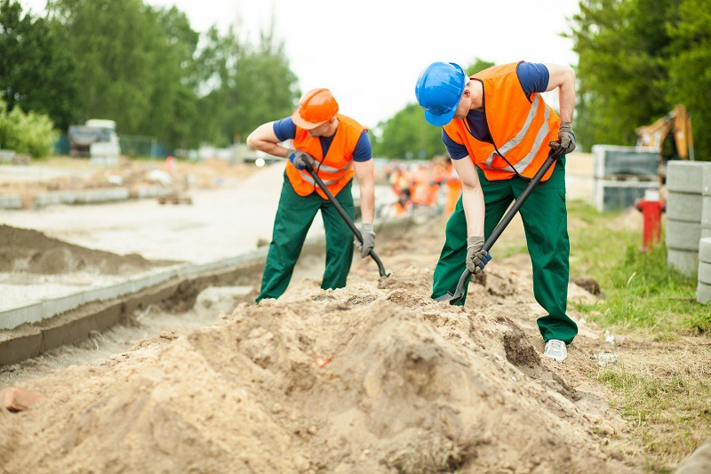

Копка - услуги землекопа
Земляные работы являются неотъемлемой частью работ по обустройству земельного участка и строительству объектов любого масштаба.
Копка земли является востребованной услугой, которая предоставляется множеством компаний и частными предпринимателями. Землекопы в Москве от “РазнорабМСК” - оптимальный вариант для любых категорий заказчиков. Обратившись к нам, можно рассчитывать на выгодную цену найма сотрудников для задач любой сложности. Постоянный штат рабочих позволяет оформить заказ на нужное количество мастеров, т.к. мы можем предоставить от 2 до 100 человек. Копка траншей, как и другие выполняемые работы нашими землекопами, выполняются в соответствии с проектом и требованиями клиента. Своевременность оказываемых услуг гарантируется - дополнительный повод для обращения в “РанорабМСК”. Что включают в себя земляные работы от нашей компании
- Копка колодцев. Услуга, востребованная среди владельцев частных домов, дач и коттеджей, позволяя получить постоянный источник воды. Все работы выполняются вручную, что позволяет не допустить ошибок в процессе копки. Сотрудники комплектуются необходимым инструментом и оборудованием.
- Копка канализации. Процесс, позволяющий создать систему удаления стоков и отходов. Все этапы осуществляется в соответствии с разработанным проектом.
- Копка котлованов. Необходимость в таких земляных выемках может возникнуть в разных ситуациях. Простой пример - создание автоматической системы полива.
- Строительство фундамента. Для его сооружения нужно подготовить земельный участок - требуется выкопать подходящую площадку.
- Прокладка электрических сетей и других коммуникационных систем. Сотрудники “РазнорабМСК” оперативно создадут место для прокладки труб и кабелей.
Это не весь спектр работ, которые включает в себя копка земли. Не стоит забывать, что обратиться к нам нужно даже при необходимости вскапывания огорода и вырывания скважины. Почему стоит доверять “РазнорабМСК”
- Индивидуальный подход к поставленной задаче со стороны сотрудников. Копка котлованов и другие услуги осуществляются согласно требованиям клиента.
- Гарантия своевременного завершения работ. Клиент может быть уверенным в получении результата в ранее оговоренные сроки.
- Заказать землекопов можно в удобное время. Для этого достаточно связаться с менеджером и обговорить условия оформления заявки.
- Сотрудничаем с физическими и юридическими лицами.
Для оформления заказа нужно позвонить по указанному номеру или написать в онлайн-чат. Способ оплаты уточняется в процессе общения с менеджером - наличный, безналичный расчет. Стоимость предложенной услуги установленная, т.е. на сайте указывается цена за час одного землекопа. Не упускайте возможность получить качественные услуги по копке земли с выездом нужного количества рабочих по указанному адресу.
30.07.2022